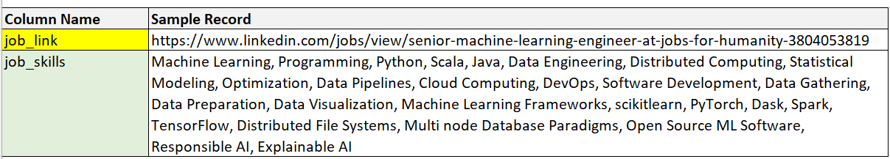

Knowing which data skills are most important for success in the field of data science is key for the best education and preparation for a a fruitful career. Despite the abundance of learning resources and educational offerings for data science, or because of such abundance, it can be challenging to know where to start and which skills are most critical. To try to answer this question and fill this knowledge gap, we undertook an evaluation of a contemporary data on which skills were most in demand for data science jobs.
Process and Data
To facilitate collaboration, we created two shared resources (a MySQL database in Azure and a Github repository) and used email/Zoom for communication.
We obtained the dataset “Data Science Job Postings & Skills (2024)” from Kaggle(1). The data was originally sourced by Kaggle user “Asaniczka” by scraping publicly available LinkedIn job postings related to the term “data science”. It is presented as a raw data dump in three files, each with 12,218 rows, one per job posting:
Job_summary: Two columns: URL and “job_summary,” which appears to be the original formatted job posting data
Job_postings: 15 columns, one row per posting. Appears to have been derived from #1,
Job_skills: Two columns, URL and comma-delimited list of skills found in the job listing, also appears to have been derived from #1 above
The team evaluated all tables and used #2 and #3 in this analysis, referred to below as raw_job_postings.csv and raw_job_skills.csv.
Significant cleaning and transformation was required to import this data into MySQL in a normalized and useful format.
We began with loading the libraries:
library (tidyverse)
── Attaching core tidyverse packages ──────────────────────── tidyverse 2.0.0 ──
✔ dplyr 1.1.4 ✔ readr 2.1.5
✔ forcats 1.0.0 ✔ stringr 1.5.1
✔ ggplot2 3.4.4 ✔ tibble 3.2.1
✔ lubridate 1.9.3 ✔ tidyr 1.3.0
✔ purrr 1.0.2
── Conflicts ────────────────────────────────────────── tidyverse_conflicts() ──
✖ dplyr::filter() masks stats::filter()
✖ dplyr::lag() masks stats::lag()
ℹ Use the conflicted package (<http://conflicted.r-lib.org/>) to force all conflicts to become errors
library (dplyr)
Data Preparation
The desired outcome of this process was a normalized MySQL database as follows:
Fig. 1 ER diagram of MySQL database
1. Job Postings Table
Upon examination, the raw_job_postings file pictured in Fig. 1 below was in a wide tidy format, with one row per observation (job posting). The following issues were noted:
The primary key was the URL of the job posting, which was unwieldy and also proved to have a small number of duplicates (<20).
Several columns appeared to be for the author’s use in processing and were not meaningful for analysis
Rogue commas and invalid characters caused repeated errors in the import process
The table was denormalized, with values repeating across postings
These and other minor issues needed to be resolved before moving the data into MySQL (see Fig. 2 and Fig. 3):
Fig. 2: Original File
Fig. 3: Format of Table with Keys in MySQL
First, we imported the raw file and created a working dataframe of only necessary columns with revised names. (Note that one transformation was done during the evaluation process outside of R: the creation of a unique random number “id_simple” as a new primary key for job postings in lieu of URLs. All other keys were generated in R below.)
Rows: 12217 Columns: 16
── Column specification ────────────────────────────────────────────────────────
Delimiter: ","
chr (11): job_link, last_status, job_title, company, job_location, first_se...
dbl (1): id_simple
lgl (3): got_summary, got_ner, is_being_worked
dttm (1): last_processed_time
ℹ Use `spec()` to retrieve the full column specification for this data.
ℹ Specify the column types or set `show_col_types = FALSE` to quiet this message.
This clean, tidy dataset was then normalized for MySQL by creating keys and lookup tables for values that repeat across postings.
Normalizing data supports data integrity and ease of maintenance: for example, renaming job levels or adding new data elements about companies would only need a single edit to a lookup table instead of across all tables where those data elements appear.
With the lookup tables created and all the keys now in the working copy of the table, we removed all the repeating values and were left with the final job posting table for MySQL:
The raw_job_postings_skills file pictured in Fig. 4 below was in a tidy format, with one row per observation (in this case, job posting/skills list pairs).
However, although tidy, it required significant cleaning, transformation, and tidying in order to be used for analysis:
The primary key was the URL of the job posting
Skills for each posting were listed in concatenated strings of free text
These strings contained many invalid characters that would cause import errors in MySQL
Fig. 4: Original Skills by Posting File

Our first step was to parse the skills string into columns:
#-------- Import table and parse comma delimited list of skills into columns: df_job_skills_raw <-read_csv("https://raw.githubusercontent.com/unsecuredAMRAP/607pr3/main/1_R_transform_raw_files_for_SQL/raw_job_skills2.csv")
Rows: 12217 Columns: 3
── Column specification ────────────────────────────────────────────────────────
Delimiter: ","
chr (2): job_link, job_skills
dbl (1): id_simple
ℹ Use `spec()` to retrieve the full column specification for this data.
ℹ Specify the column types or set `show_col_types = FALSE` to quiet this message.
tibble [12,217 × 202] (S3: tbl_df/tbl/data.frame)
$ posting_id: chr [1:12217] "6334263" "6950875" "7920777" "5655137" ...
$ URL : chr [1:12217] "https://www.linkedin.com/jobs/view/senior-machine-learning-engineer-at-jobs-for-humanity-3804053819" "https://www.linkedin.com/jobs/view/principal-software-engineer-ml-accelerators-at-aurora-3703455068" "https://www.linkedin.com/jobs/view/senior-etl-data-warehouse-specialist-at-adame-services-llc-3765023888" "https://www.linkedin.com/jobs/view/senior-data-warehouse-developer-architect-at-morph-enterprise-3794602483" ...
$ Skill_1 : chr [1:12217] "Machine Learning" "C++" "ETL" "Data Lakes" ...
$ Skill_2 : chr [1:12217] " Programming" " Python" " Data Integration" " Data Bricks" ...
$ Skill_3 : chr [1:12217] " Python" " PyTorch" " Data Transformation" " Azure Data Factory Pipelines" ...
$ Skill_4 : chr [1:12217] " Scala" " TensorFlow" " Data Warehousing" " Spark" ...
$ Skill_5 : chr [1:12217] " Java" " MXNet" " Business Intelligence" " Python" ...
$ Skill_6 : chr [1:12217] " Data Engineering" " CUDA" " Data Modeling" " Business Intelligence" ...
$ Skill_7 : chr [1:12217] " Distributed Computing" " OpenCL" " Data Architecture" " Data Warehouse" ...
$ Skill_8 : chr [1:12217] " Statistical Modeling" " OpenVX" " Data Quality" " SQL Server" ...
$ Skill_9 : chr [1:12217] " Optimization" " Halide" " Data Validation" " Azure" ...
$ Skill_10 : chr [1:12217] " Data Pipelines" " SIMD programming models" " Data Cleansing" " ETL/ELT" ...
$ Skill_11 : chr [1:12217] " Cloud Computing" " MLspecific accelerators" " Performance Optimization" " SQL Server Integration Services" ...
$ Skill_12 : chr [1:12217] " DevOps" " Linux/unix environments" " Performance Tuning" " TSQL" ...
$ Skill_13 : chr [1:12217] " Software Development" " Deep learning frameworks" " Troubleshooting" " Data Formatting" ...
$ Skill_14 : chr [1:12217] " Data Gathering" " Computer vision deep learning models" " Documentation" " Data Capture" ...
$ Skill_15 : chr [1:12217] " Data Preparation" " ML software and hardware technology" " Reporting" " Data Search" ...
$ Skill_16 : chr [1:12217] " Data Visualization" " Inference on edge platforms" " Data Analysis" " Data Retrieval" ...
$ Skill_17 : chr [1:12217] " Machine Learning Frameworks" " Cloud ML training pipelines" " Collaboration" " Data Extraction" ...
$ Skill_18 : chr [1:12217] " scikitlearn" " HPC experience" " Communication" " Data Classification" ...
$ Skill_19 : chr [1:12217] " PyTorch" " Performance troubleshooting" " SQL" " Information Filtering" ...
$ Skill_20 : chr [1:12217] " Dask" " Profiling" " Informatica" " Data Mining Architectures" ...
$ Skill_21 : chr [1:12217] " Spark" " Roofline model" " Talend" " Modeling Standards" ...
$ Skill_22 : chr [1:12217] " TensorFlow" " Analytical skills" " Apache NiFi" " Reporting" ...
$ Skill_23 : chr [1:12217] " Distributed File Systems" " Communication skills" " AWS Redshift" " Data Analysis Methodologies" ...
$ Skill_24 : chr [1:12217] " Multi node Database Paradigms" NA " Azure SQL Data Warehouse" " Data Engineering" ...
$ Skill_25 : chr [1:12217] " Open Source ML Software" NA " Financial/Banking" " Database File Systems Optimization" ...
$ Skill_26 : chr [1:12217] " Responsible AI" NA " CloudBased Data Platforms" " API's" ...
$ Skill_27 : chr [1:12217] " Explainable AI" NA " Regulatory Compliance" " Analytics as a Service" ...
$ Skill_28 : chr [1:12217] NA NA NA " Relational Databases" ...
$ Skill_29 : chr [1:12217] NA NA NA " Dimensional Databases" ...
$ Skill_30 : chr [1:12217] NA NA NA " Entity Relationships" ...
$ Skill_31 : chr [1:12217] NA NA NA " Data Warehousing" ...
$ Skill_32 : chr [1:12217] NA NA NA " Facts" ...
$ Skill_33 : chr [1:12217] NA NA NA " Dimensions" ...
$ Skill_34 : chr [1:12217] NA NA NA " Star Schema Concepts" ...
$ Skill_35 : chr [1:12217] NA NA NA " Star Schema Terminology" ...
$ Skill_36 : chr [1:12217] NA NA NA " Project Management" ...
$ Skill_37 : chr [1:12217] NA NA NA " Organizational Skills" ...
$ Skill_38 : chr [1:12217] NA NA NA " Collaboration" ...
$ Skill_39 : chr [1:12217] NA NA NA " Communication" ...
$ Skill_40 : chr [1:12217] NA NA NA " Technical Presentaion Skills" ...
$ Skill_41 : chr [1:12217] NA NA NA " 12+ Years of Relevant Experience" ...
$ Skill_42 : chr [1:12217] NA NA NA NA ...
$ Skill_43 : chr [1:12217] NA NA NA NA ...
$ Skill_44 : chr [1:12217] NA NA NA NA ...
$ Skill_45 : chr [1:12217] NA NA NA NA ...
$ Skill_46 : chr [1:12217] NA NA NA NA ...
$ Skill_47 : chr [1:12217] NA NA NA NA ...
$ Skill_48 : chr [1:12217] NA NA NA NA ...
$ Skill_49 : chr [1:12217] NA NA NA NA ...
$ Skill_50 : chr [1:12217] NA NA NA NA ...
$ Skill_51 : chr [1:12217] NA NA NA NA ...
$ Skill_52 : chr [1:12217] NA NA NA NA ...
$ Skill_53 : chr [1:12217] NA NA NA NA ...
$ Skill_54 : chr [1:12217] NA NA NA NA ...
$ Skill_55 : chr [1:12217] NA NA NA NA ...
$ Skill_56 : chr [1:12217] NA NA NA NA ...
$ Skill_57 : chr [1:12217] NA NA NA NA ...
$ Skill_58 : chr [1:12217] NA NA NA NA ...
$ Skill_59 : chr [1:12217] NA NA NA NA ...
$ Skill_60 : chr [1:12217] NA NA NA NA ...
$ Skill_61 : chr [1:12217] NA NA NA NA ...
$ Skill_62 : chr [1:12217] NA NA NA NA ...
$ Skill_63 : chr [1:12217] NA NA NA NA ...
$ Skill_64 : chr [1:12217] NA NA NA NA ...
$ Skill_65 : chr [1:12217] NA NA NA NA ...
$ Skill_66 : chr [1:12217] NA NA NA NA ...
$ Skill_67 : chr [1:12217] NA NA NA NA ...
$ Skill_68 : chr [1:12217] NA NA NA NA ...
$ Skill_69 : chr [1:12217] NA NA NA NA ...
$ Skill_70 : chr [1:12217] NA NA NA NA ...
$ Skill_71 : chr [1:12217] NA NA NA NA ...
$ Skill_72 : chr [1:12217] NA NA NA NA ...
$ Skill_73 : chr [1:12217] NA NA NA NA ...
$ Skill_74 : chr [1:12217] NA NA NA NA ...
$ Skill_75 : chr [1:12217] NA NA NA NA ...
$ Skill_76 : chr [1:12217] NA NA NA NA ...
$ Skill_77 : chr [1:12217] NA NA NA NA ...
$ Skill_78 : chr [1:12217] NA NA NA NA ...
$ Skill_79 : chr [1:12217] NA NA NA NA ...
$ Skill_80 : chr [1:12217] NA NA NA NA ...
$ Skill_81 : chr [1:12217] NA NA NA NA ...
$ Skill_82 : chr [1:12217] NA NA NA NA ...
$ Skill_83 : chr [1:12217] NA NA NA NA ...
$ Skill_84 : chr [1:12217] NA NA NA NA ...
$ Skill_85 : chr [1:12217] NA NA NA NA ...
$ Skill_86 : chr [1:12217] NA NA NA NA ...
$ Skill_87 : chr [1:12217] NA NA NA NA ...
$ Skill_88 : chr [1:12217] NA NA NA NA ...
$ Skill_89 : chr [1:12217] NA NA NA NA ...
$ Skill_90 : chr [1:12217] NA NA NA NA ...
$ Skill_91 : chr [1:12217] NA NA NA NA ...
$ Skill_92 : chr [1:12217] NA NA NA NA ...
$ Skill_93 : chr [1:12217] NA NA NA NA ...
$ Skill_94 : chr [1:12217] NA NA NA NA ...
$ Skill_95 : chr [1:12217] NA NA NA NA ...
$ Skill_96 : chr [1:12217] NA NA NA NA ...
$ Skill_97 : chr [1:12217] NA NA NA NA ...
[list output truncated]
We needed to transform this very wide dataframe to a long tidy format for analysis by melting these repeating data elements into rows. We also cleaned those values by removing white spaces in this step.
Finally, we created the skills table and exported it to a local Github repo (note that below code exports to working directory):
# Create skills lookup table (note: this was not used in MySQL due to unresolved errors)df_skills_master <- df_skills_melt %>%distinct(skill_desc)df_skills_master <- df_skills_master %>%mutate(skill_id =1:nrow(df_skills_master))df_skills_master <- df_skills_master[,c(2,1)]# Create job posting skills with desc table df_job_posting_skills_w_desc <-mutate(left_join(df_skills_melt, df_skills_master,by ="skill_desc"))df_job_posting_skills_w_desc <- df_job_posting_skills_w_desc[,c(1,3,2)]head(df_job_posting_skills_w_desc)
#----------- Write all to .csv for SQL write.csv(df_city,"tbl_city.csv", row.names=FALSE)write.csv(df_company,"tbl_company.csv", row.names=FALSE)write.csv(df_country,"tbl_country.csv", row.names=FALSE)write.csv(df_job_level,"tbl_job_level.csv", row.names=FALSE)write.csv(df_job_posting,"tbl_job_posting.csv", row.names=FALSE)write.csv(df_onsite_flag,"tbl_onsite_flag.csv", row.names=FALSE)write.csv(df_search_pos,"tbl_search_pos.csv", row.names=FALSE)write.csv(df_title,"tbl_title.csv", row.names=FALSE)write.csv(df_job_posting_skills_w_desc,"tbl_job_posting_skills_w_desc.csv", row.names=FALSE)
Import to MySQL:
A SQL script was created to generate the tables and load the data (see from a local copy of our repo as MySQL could not import them directly from Github. In loading the data, we found that two main tables contained an excessive number of rogue commas and invalid characters, which R had handled in the dataframes but MySQL could not import to tables.
To resolve:
All files were converted to tab-delimited before loading, to handle delimiter issues in text strings like job description or skill description
We completed multiple iterations of removing invalid characters from the main tables
During testing, we encountered one error that required us to denormalize the job posting skills table as a workaround due to time constraints: joins to the planned lookup table “skills_master” containing skill descriptions failed. In troubleshooting, we found a large number of silent errors had occurred during the load process (visible when using the “show warnings” command) that were partially resolved by seeking out more invalid characters. A workaround “job_posting_skills_w_desc table” was created, and while not normalized, the functionality of the data was maintained for analysis.
Record counts and links were validated and the database released for analysis.
Non-executable SQL script included below for reference only-- This script creates the nine tables and loads in data from .txt. files-- ---------------------------------------------------------- Create main tbl_job_posting: one row per job posting-- --------------------------------------------------------drop table if exists tbl_job_posting;create table tbl_job_posting ( posting_id varchar(8) primary key, URL longtext, first_seen varchar(255), last_processed varchar(255), title_id varchar(8), company_id varchar(8), location_id varchar(8), city_id varchar(8), country_id varchar(8), search_pos_id varchar(8), job_level_id varchar(8), onsite_flag_id varchar(8) );load data local infile 'C:/Users/amand/Git_Projects/DATA607/project_3/tbl_job_posting.txt'into table tbl_job_postingignore 1 rows;select * from tbl_job_posting;select count(*) from tbl_job_posting;-- ------------------------------------------------------------- Create all lookup tables-- -----------------------------------------------------------drop table if exists tbl_title;create table tbl_title ( title_id varchar(8) primary key, title_desc longtext );load data local infile 'C:/Users/amand/Git_Projects/DATA607/project_3/tbl_title.txt'into table tbl_titleignore 1 rows;select * from tbl_title;select count(*) from tbl_title;drop table if exists tbl_company;create table tbl_company ( company_id varchar(8) primary key, company_desc longtext );load data local infile 'C:/Users/amand/Git_Projects/DATA607/project_3/tbl_company.txt'into table tbl_companyignore 1 rows;select * from tbl_company;select count(*) from tbl_company;drop table if exists tbl_city;create table tbl_city ( city_id varchar(8) primary key, city_desc longtext );load data local infile 'C:/Users/amand/Git_Projects/DATA607/project_3/tbl_city.txt'into table tbl_cityignore 1 rows;select * from tbl_city;select count(*) from tbl_city;drop table if exists tbl_country;create table tbl_country ( country_id varchar(8) primary key, country_desc longtext );load data local infile 'C:/Users/amand/Git_Projects/DATA607/project_3/tbl_country.txt'into table tbl_countryignore 1 rows;select * from tbl_country;select count(*) from tbl_country;drop table if exists tbl_search_position;create table tbl_search_position ( search_pos_id varchar(8) primary key, search_pos_desc longtext );load data local infile 'C:/Users/amand/Git_Projects/DATA607/project_3/tbl_search_pos.txt'into table tbl_search_positionignore 1 rows;select * from tbl_search_position;select count(*) from tbl_search_position;drop table if exists tbl_job_level;create table tbl_job_level( job_level_id varchar(8) primary key, job_level_desc longtext );load data local infile 'C:/Users/amand/Git_Projects/DATA607/project_3/tbl_job_level.txt'into table tbl_job_levelignore 1 rows;select * from tbl_job_level;select count(*) from tbl_job_level;drop table if exists tbl_onsite_flag;create table tbl_onsite_flag asSELECT distinct onsite_flag_idFROM project_3_team.tbl_job_posting;ALTER TABLE tbl_onsite_flag ADD COLUMN onsite_desc varchar(20);UPDATE tbl_onsite_flag SET onsite_desc = CASE onsite_flag_id WHEN 1 THEN "On_Site" WHEN 2 THEN "Hybrid" ELSE "Remote" END;drop table if exists tbl_job_posting_skills_w_desc;create table tbl_job_posting_skills_w_desc ( posting_id varchar(20), skills_id varchar(20), skills_desc varchar(255) );load data local infile 'C:/Users/amand/Git_Projects/DATA607/project_3/tbl_job_posting_skills_w_desc.txt'into table tbl_job_posting_skills_w_descFIELDS TERMINATED BY '\t'ignore 1 rows;show warnings; select * from tbl_job_posting_skills_w_desc;select count(*) from tbl_job_posting_skills_w_desc;